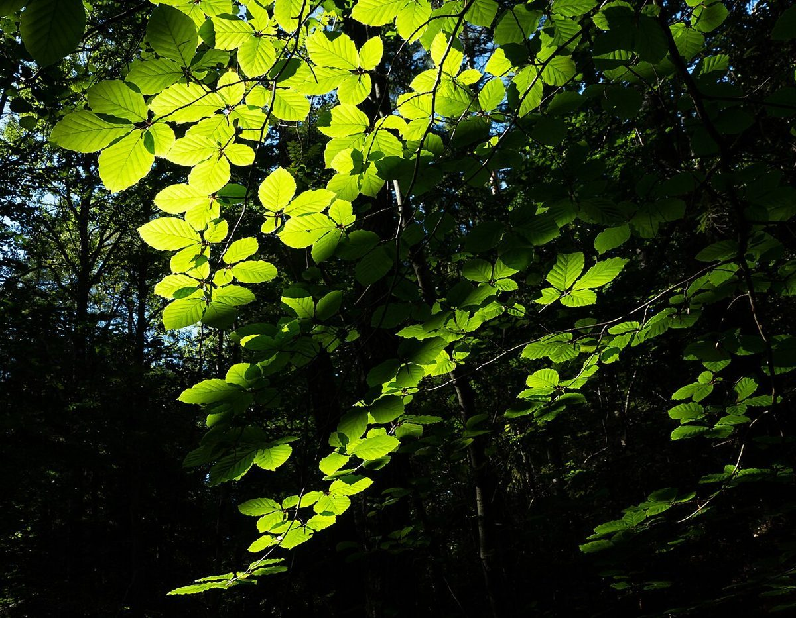

カフェ / 滋賀県高島市
Familleファミーユ
滋賀県高島市安曇川町にあるカフェ「Famille」のご案内ページです。営業時間やメニューなど、詳しいことは準備中。まずはInstagramをのぞいてみてください。

制作側の連想
「Famille」と、分類の「科」
「Famille」はフランス語の単語で、生物の分類では「科」を指す言葉としても使われます。制作側はこの二つ目の意味から、標本ラベルの「科・属・種」という階層を連想し、このサイトを標本台紙のような作りにしました。お店の理念・由来とは無関係の、制作側の連想です。
標本棚
葉っぱの台紙(イメージ)
写真は高島市の風景やお店の写真ではありません。国外・撮影地不明のフリー素材です。

採集メモ
お店のこと(確認できたものだけ)
| 所在地 | 〒520-1234 滋賀県高島市安曇川町四津川６４２ |
|---|---|
| 電話 | 0740-34-0324 |
| 営業時間 | 準備中 |
| 定休日 | 準備中 |
| ご予約 | 準備中 |
| 駐車場 | 準備中 |
| SNS | Instagram @famille0418__2nd |